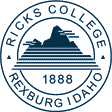

Leadership for Life
Principles of Leadership
from the Life and Teachings of Jesus Christ
General Studies 210 Syllabus
Room 230 Manwaring Center
Scroll down for Winter Semester Syllabus and Calendar:

 |
Leadership for Life Principles of Leadership Room 230 Manwaring Center Scroll down for Winter Semester Syllabus and Calendar: |
|
BACKGROUND:
In this class students will study leadership principles that they
may begin to develop the qualities and skills that Jesus Christ
demonstrated in his perfect leadership. As President Spencer W.
Kimball explained: “We will find it very difficult to be
significant leaders unless we recognize the reality of the
perfect leader, Jesus Christ, and let Him be the light by which
we see the way!” (“Jesus: The Perfect Leader,”
Ensign, August 1979, p. 7).
RICKS COLLEGE GUIDING PRINCIPLES:
“These guiding principles should be at the heart of all we
are and do at Ricks College. Our planning and decisions and
programs and activities should be focused upon and give emphasis
to these basic principles” (President David A. Bednar).
1. True teaching is done by and with the Spirit of the Holy
Ghost.
2. Every person at Ricks College is a teacher.
3. The most effective teaching and learning experiences occur
“one by one.”
4. More students must be blessed.
5. Righteous sociality (D&C 130:2) is essential to individual
development.
6. Service provides opportunities for growth.
COURSE VALUE:
President Kimball said, “Membership in the
Church is a call to leadership” and that leadership is,
“the ability to encourage the best efforts of others in
working toward a desirable goal” (The Teachings of Spencer
W. Kimball, p. 322). Elder Boyd K. Packer emphasized that all
Church leaders serve as teachers: "The prophet is a teacher;
his counselors are teachers; the General Authorities are
teachers. Stake presidents and mission presidents are teachers;
high councilors and quorum presidents are teachers; bishops are
teachers; and so through all of the organizations of the Church.
The Church moves forward sustained by the power of the teaching
that is accomplished" (Teaching, No Greater Call, p 150).
Student Leadership Development at Ricks College is
“Leadership with Life” and “Life with
Discipleship.” Students receive training and experiences to
help chart a leadership course of true Discipleship in the
Church, Family, Community, and Workplace.
Students teaching students and students helping students to know,
understand and apply the doctrines and principles of the gospel,
this is “Divine Centered Leadership.” This leadership
emphasis is one of many initiatives at Ricks College to help
overcome the “Moral Decline” of the world.
INTRODUCTION:
Members of the Church can learn to be leaders. "Contrary to
the old saying that leaders are born not made, the art of leading
can be taught and it can be mastered" (President Gordon B.
Hinckley quoting General Mark W. Clark, cited in TOGBH, p. 306).
The scriptures serve as the text for this course. President
Spencer W. Kimball taught that, "The scriptures are the
handbook of instructions for the would-be Leader" (Jesus:
"The Perfect Leader," Ensign, August 1979, p. 7).
President N. Eldon Tanner said: " . . . Christ is a model of
correct leadership; and, as the scriptures record his life and
teachings, they become case studies of divine leadership"
(The Message, New Era, June 1997, p. 4. cited in Eric Stephan, R.
Wayne Pace, The Perfect Leader, p. 3). (NOTE: Authorized by CES
to pilot this syllabus)
COURSE REQUIREMENTS:
Attendance is expected on Monday and Wednesday with no class on Friday (this hour spent teaching others during the week).
Weekly reports on your progress, teaching, and leadership to be posted on the Message Board (on this home page)
Grade will be determined my attendance, contribution to class discussions, lesson preparation and presentation, and weekly "student teaching student" presentations and your weekly reports posted on internet.
Because "Effective teaching is the very essence of leadership in the Church (President Gordon B. Hinckley), we will each have the chance to develop our teaching/leadership skills by preparing a leadership lesson and presenting it in class. These lessons will be prepared in such a way that each student will "go and teach" others. Each lesson will be prepared using the following guidelines:
Teaches the Doctrine/Principles of the Gospel of Jesus Christ.
Prepare a Flip Chart consisting of no more than 15 pages, and
Prepare a sound track CD with at least two quotes using the voice of our living prophets and apostles (from recent General Conference talks).
Lesson should be fifteen to twenty (15-20) minutes in length.
Syllabus for Winter Semester:
Week of...
January 24
Select Principles with doctrinal foundation - class discussion to finalize lesson topics.
February 7
SCRIPTURE: John 15:5
PRINCIPLE: "Without [Christ] ye can do nothing"
February 14,16
SCRIPTURE: 1 Corinthians 3:16, 17
PRINCIPLE: "Ye are the Temple of God"
February 21,23
SCRIPTURE: Ether 12:4
PRINCIPLE: "Hope for a Better World"
February 28, March 1
SCRIPTURE: Alma 9:9; Helaman 5:6-12
PRINCIPLE: "Do ye not Remember" Principle of
Remembrance
March 6, 8
SCRIPTURE: John 13:35
PRINCIPLE: "Love one another" Charity
March 13, 15
SCRIPTURE: Jacob 4:14
PRINCIPLE: "Look [not] beyond the mark"
March 20, 20
SCRIPTURE: D&C 88:67
PRINCIPLE: Light "If your eye be single to my glory"
March 27, 29
SCRIPTURE: D&C 61:36; Mosiah 24:15
PRINCIPLE: "Be of Good Cheer"
April 3, 5
SCRIPTURE: Mosiah 13:20
PRINCIPLE: Family "Honor thy father and thy mother"
April 10, 12
SCRIPTURE: D&C 121:45; 4:6; Article of Faith
13
PRINCIPLE: Virtue "Let virtue garnish thy thoughts
unceasingly"
April 17
Last class
| Home | Iron Rod Combat Moral Decline |
Teton Mountain Student Leadership Institute | Leadership Classes |